Sujet PC 2016-22 : Série entière / corrigé complet
Le sujet est téléchargeable ci-dessous.
Le corrigé des questions mathématiques est de Cédric Faure, et les indices aussi ! Merci à lui.
On considère la série 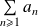 avec 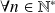 , 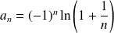 .
Question
1. Démontrer que la série converge.
La suite 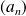 est alternée, tandis que 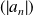 est décroissante et tend vers 0.
Par critère spécial des séries alternées, la série converge.
Question
2. a. Vérifier avec le logiciel la relation
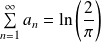 .
J'importe le module numpy pour les fonctions mathématiques d'analyse.
import numpy as np
Il est opportun de séparer la fonction qui calcule les termes et celle qui calcule la suite 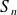 .
def an(n):
return( pow(-1, n) * np.log(1 + 1/n) )
def Sn(n):
S = 0
for i in range(1, n + 1):
S += an(i)
return(S)
lim = np.log(2 / np.pi)
Remarque : C'est combien l'infini ? ? ?
Ici,
 est supposé tendre vers l'infini. Mais en pratique, il faut bien se donner une limite. Il peut être opportun de visualiser le seuil au delà duquel
converge bien.
est supposé tendre vers l'infini. Mais en pratique, il faut bien se donner une limite. Il peut être opportun de visualiser le seuil au delà duquel
converge bien.
Pour cela je trace la courbe suivante (après avoir importé le module matplotlib.pyplot).
plt.figure('Convergence_Sn')
nmax = 3000
Ni = [i * (nmax // 10) for i in range(10)]
S = [Sn(ni) for ni in Ni]
plt.title(r"Evolution de $S_n$ en fonction de $n$")
plt.xlabel(r'$10 \times n$')
plt.ylabel(r'$S_n$')
plt.plot(Ni, S)
plt.plot([-1, 1], [lim, lim], color = 'red', linestyle = ':')
plt.show()
Je peux en déduire que la convergence se manifeste au delà de . Dans la suite, je prendrai donc 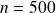 .
Question
2. b. Démontrer avec rigueur le résultat.
La série n'est pas télescopique mais presque. En tentant de faire apparaître un télescopage sur la somme partielle, on obtient une formule utilisant des factorielles.
On fixe 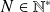 , et on calcule 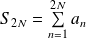 .
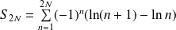 .
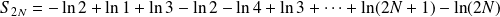 .
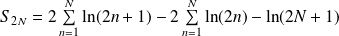 .
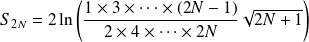 .
On travaille sur le terme à l'intérieur du logarithme, il vaut :
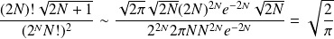 .
Donc 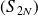 tend vers 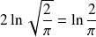 . Puisque la série converge, cette limite est la somme de la série.
Question
3. Montrer que le rayon de convergence de la série entière 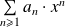 est 1.
La série 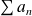 converge sans converger absolument (équivalent et critère de Riemann), donc le rayon de convergence vaut 1.
def an(n):
return( pow(-1, n) * np.log(1 + 1/n) )
def Sn(n):
S = 0
for i in range(1, n + 1):
S += an(i)
return(S)
lim = np.log(2 / np.pi)
On note
 sa somme sur ]-1, 1[.
sa somme sur ]-1, 1[.
Question
4. a. Faire un tracé de
avec le logiciel et vérifier que
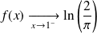 .
J'importe le module matplotlib.pyplot pour les fonctions de tracés.
import matplotlib.pyplot as plt
def f(x, n):
res = 0
for i in range(1, n + 1):
res += an(i) * pow(x, i)
return(res)
eps, N, n = 1e-3, 1e3, 500
plt.figure('Evolution_f')
X = np.arange(-1 + eps, 1 - eps, 2 / N)
F = [f(xi, n) for xi in X]
plt.title(r"Evolution de $f$ sur ]-1, 1[")
plt.xlabel(r'$x$')
plt.ylabel(r'$f(x)$')
plt.plot(X, F)
plt.plot([-1, 1], [lim, lim], color = 'red', linestyle = ':')
plt.show()
Remarque : Complexité
Pour effectuer ce tracé, il est nécessaire d'évaluer
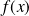
sur
 valeurs, choisies équi-réparties ici. Et pour chacune de ces valeurs, il faut calculer la somme de
termes.
valeurs, choisies équi-réparties ici. Et pour chacune de ces valeurs, il faut calculer la somme de
termes.
La complexité est donc en 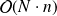 .
En pratique, jusqu'à un million de termes calculés, le temps de calcul est peu décelable. Au delà, vous risquez d'avoir à patienter...
Question
4. b. Démontrer avec rigueur le résultat.
Démontrer que la série de fonctions converge uniformément sur [0,1].
Pour 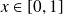 , on pose 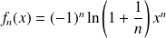 .
À fixé, la série numérique 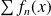 vérifie le critère spécial des séries alternées, donc elle converge et on peut majorer son reste :
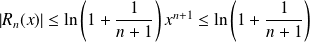 .
Cette majoration est indépendante de 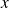 et tend vers 0 quand , donc la série 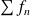 converge uniformément sur .
Les
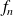
sont toutes continues donc leur somme
est aussi continue sur [0,1].
Donc en , 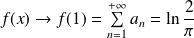 .
Question
5. a. Faire un tracé de 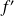 avec le logiciel et vérifier que admet une limite en 1.
On dérive l'expression de
dans la série entière :
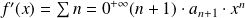 .
def fp(x, n):
res = 0
for i in range(n):
res += (i + 1) * an(i + 1) * pow(x, i)
return(res)
plt.figure('Evolution_fp')
X = np.arange(-1 + eps, 1 - eps, 1 / N)
Fp = [fp(xi, n) for xi in X]
plt.title(r"Evolution de $f'$ sur ]-1, 1[")
plt.xlabel(r'$x$')
plt.ylabel(r"$f'(x)$")
plt.plot(X, Fp)
plt.show()
Cette plage de valeur ne rend pas le graphique lisible.
On restreint la plage des abscisses à [0.9, 1] en augmentant le nombre de valeurs de x pour avoir un maillage plus fin.
N = 10000
plt.figure('Evolution_fp')
X = np.arange(0.8, 1 - eps, 1 / N)
Fp = [fp(xi, n) for xi in X]
plt.title(r"Evolution de $f'$ sur [0.8, 1[")
plt.xlabel(r'$x$')
plt.ylabel(r"$f'(x)$")
plt.plot(X, Fp)
plt.show()
On ne peut vérifie que tende vers une limite finie numériquement car quand on s'approche trop de la valeur critique 1, parait diverger.
Question
5. b. Démontrer avec rigueur le résultat.
Faire un développement limité de et décomposer 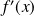 en plusieurs séries.
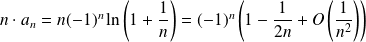 .
Donc il existe 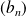 et 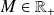 tels que 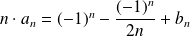 $ et 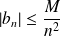 .
Pour tout , on peut donc écrire :
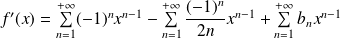 .
La première somme vaut 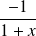 , qui admet une limite finie quand 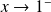 .
Sur la seconde somme, on peut comme à la question précédente appliquer le critère spécial des séries alternées et montrer la convergence uniforme sur [0,1], donc la seconde somme admet une limite finie en .
La troisième série converge normalement sur [0,1] (par la majoration de 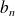 ), donc toujours par un argument de continuité la troisième somme admet une limite finie en .
Donc par somme de limites, admet une limite finie en .